Celebre o amor em um cenário encantador e memorável.
Jardins, salão climatizado e atendimento dedicado para transformar seu casamento em uma experiência inesquecível.
Peça um orçamentoNosso espaço
Um cenário feito para momentos inesquecíveis


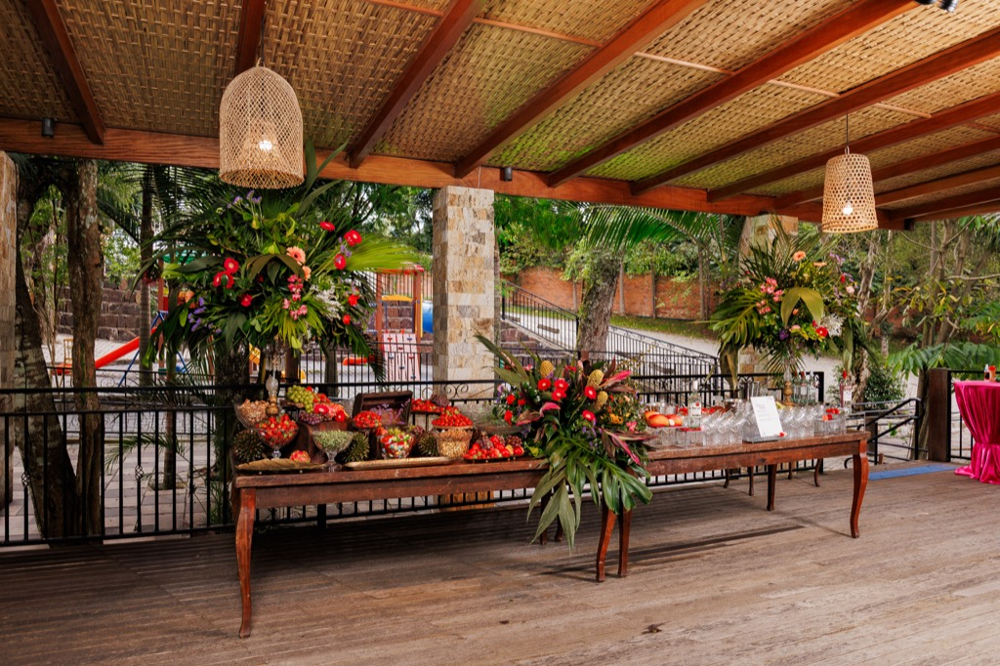
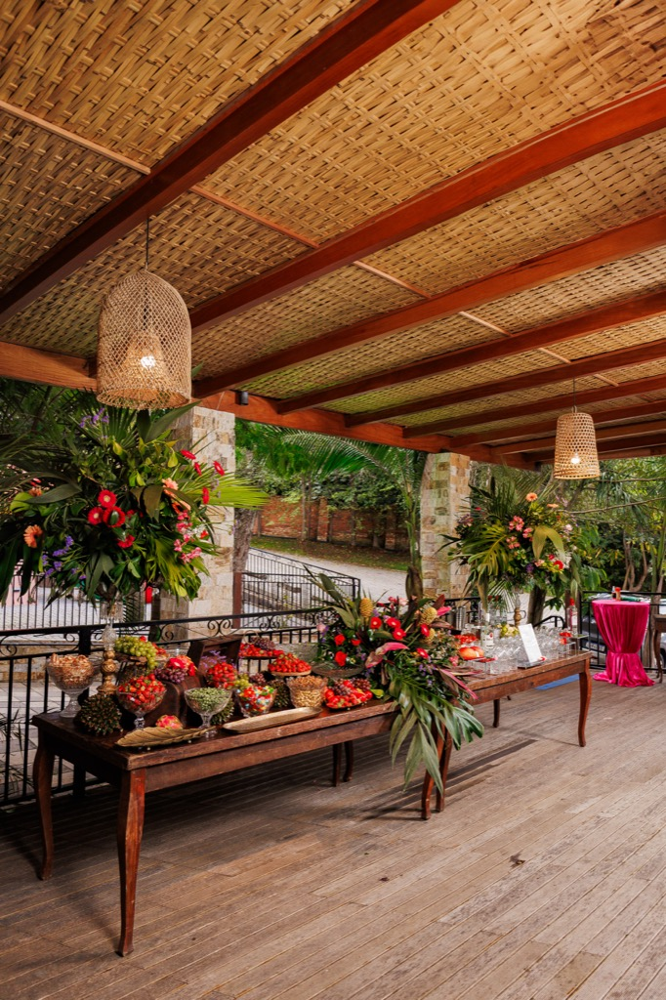
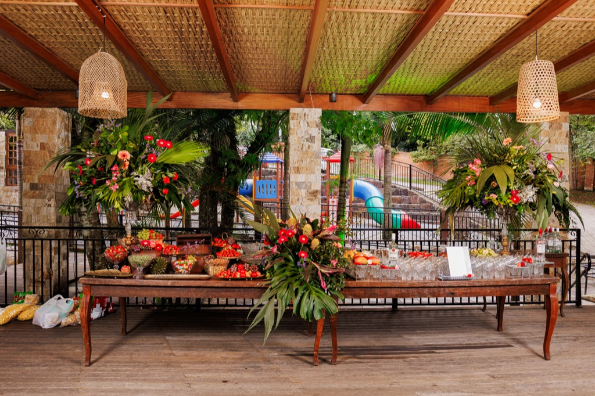
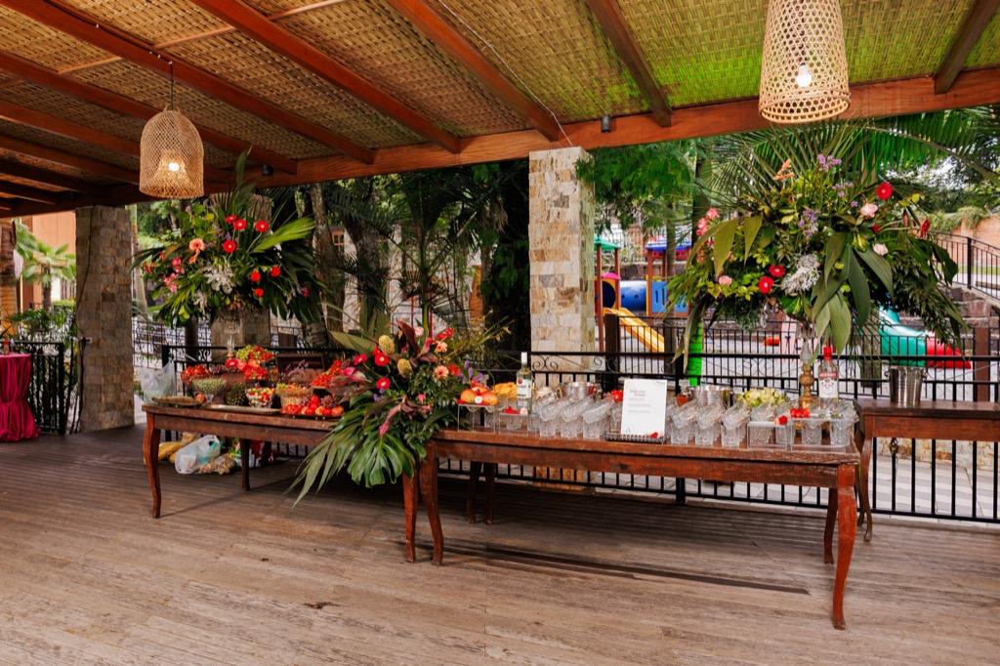
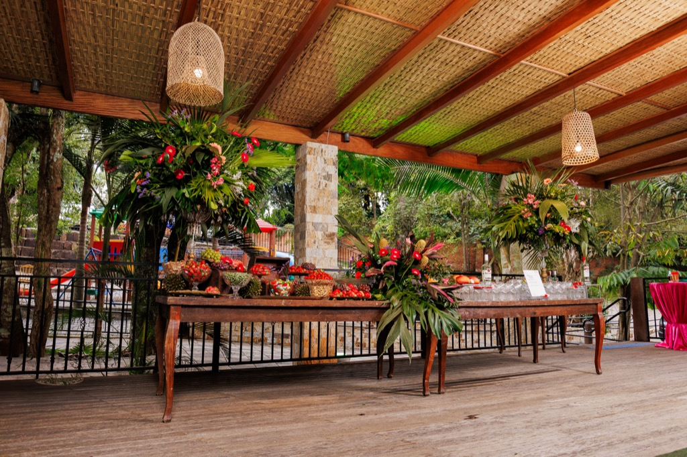
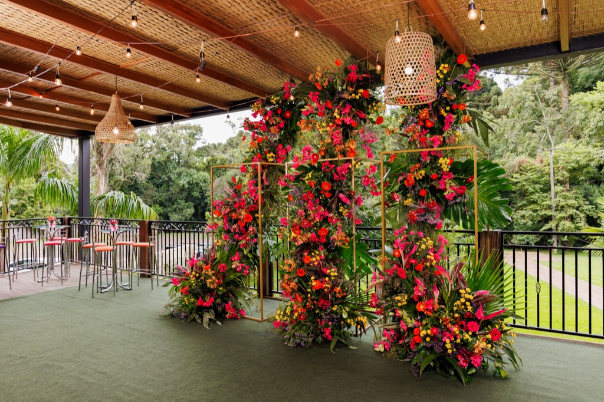
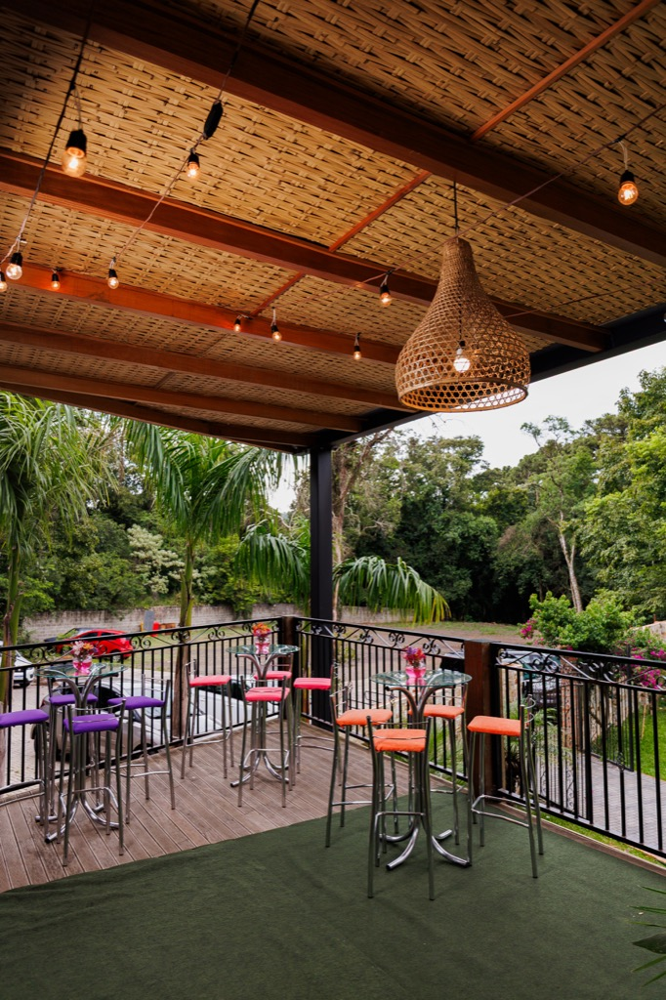
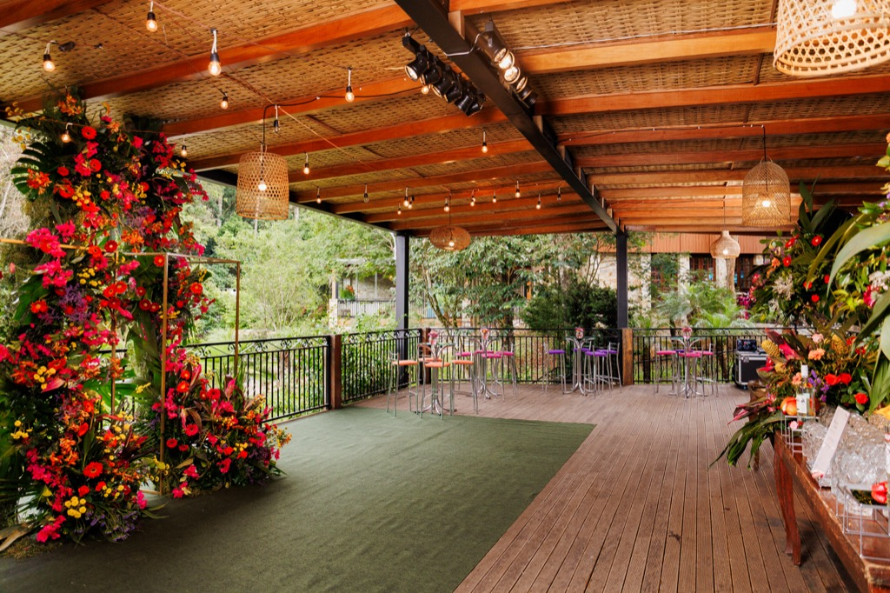
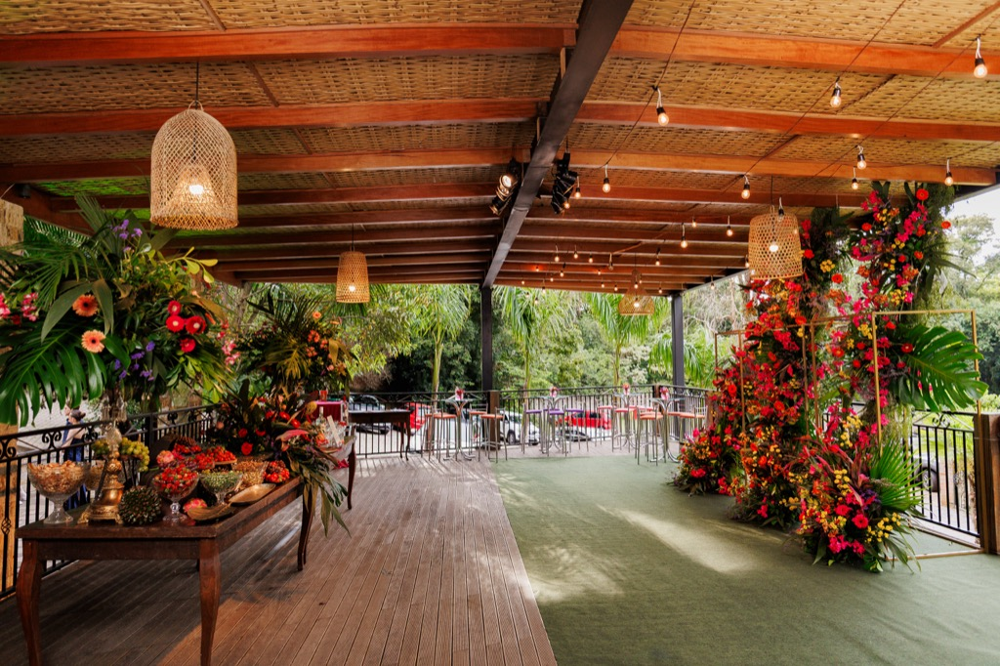
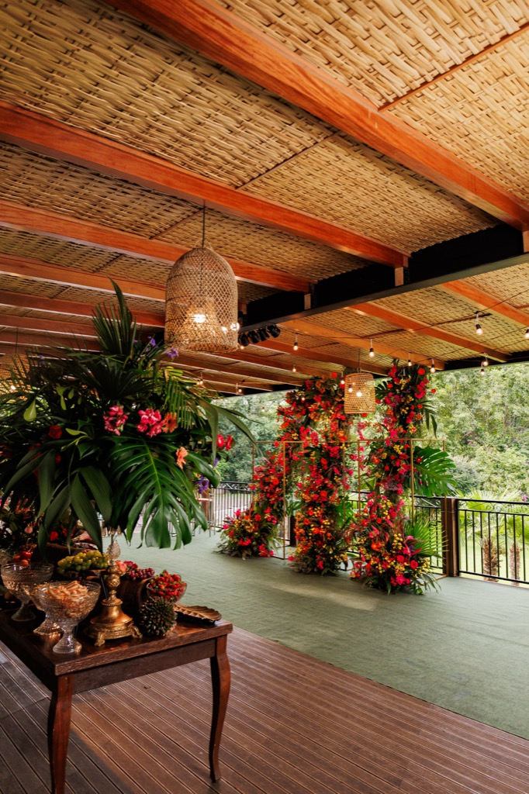
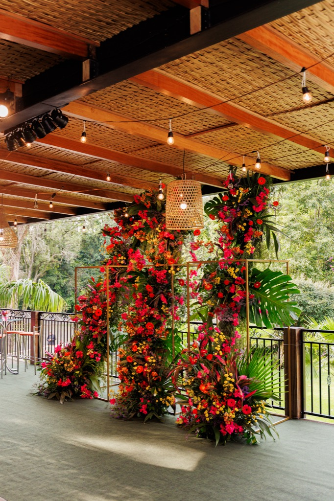


Arraste para os lados ou clique na foto para ampliar.
Eventos para cada grande ocasião
Planejamento inteligente, atmosfera acolhedora e excelência em cada detalhe.
Toque em cada tipo de evento para ver fotos e detalhes.

Casamentos
Cerimônia e recepção com ambientes internos e externos integrados.
Ver galeria
15 anos
Pista de dança, iluminação e áreas para experiências especiais.
Ver galeria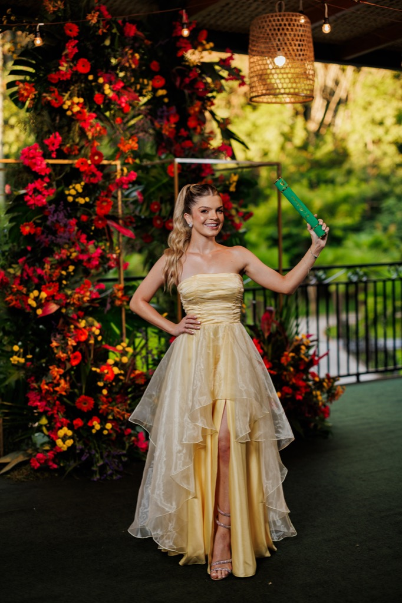
Formaturas
Salão climatizado e deck ao ar livre para celebrar com estilo.
Ver galeria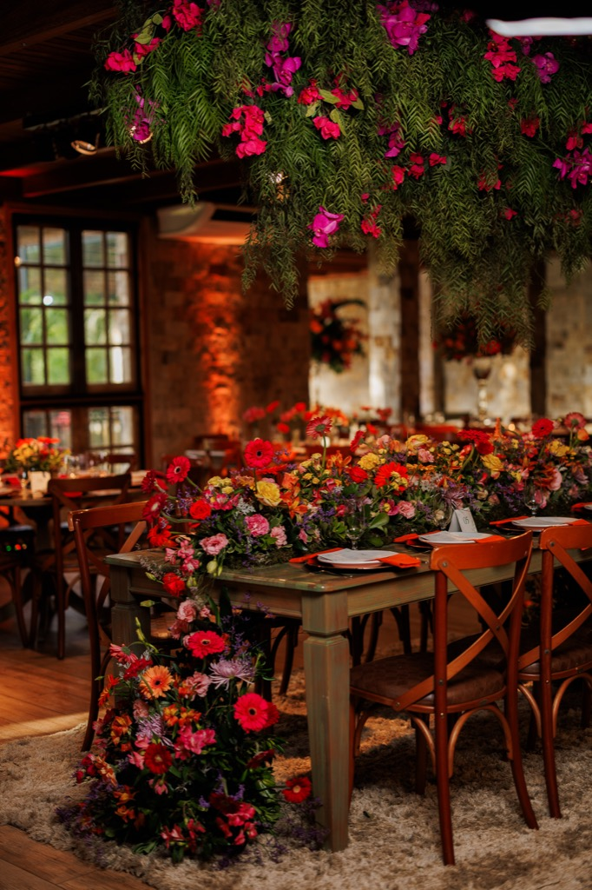
Corporativos
Confraternizações, convenções, workshops e lançamentos.
Ver galeriaPerguntas frequentes
Qual a capacidade máxima do espaço?
Até 280 convidados com conforto, variando conforme o tipo de layout escolhido.
Posso levar meus fornecedores?
Sim. Também trabalhamos com parceiros recomendados para facilitar sua organização.
Vocês oferecem suporte no dia do evento?
Oferecemos opções com coordenação e suporte operacional para sua experiência ser tranquila.
Como faço para reservar a data?
Envie o formulário ou fale via WhatsApp para verificar disponibilidade e receber proposta.
Peça um orçamento
Possui dúvidas ou gostaria de realizar um orçamento?
Preencha o formulário para entrar em contato conosco.
✔ Respondemos em até 24h úteis · Seus dados são confidenciais e não serão compartilhados
Localização
BR-282, 535 - Trevo, Chapecó - SC, 89810-800
Ver mapa e rotasObrigado por confiar na Chácara do Cris!
Recebemos suas informações com carinho. Em até 24 horas úteis, nossa equipe entrará em contato para confirmar a disponibilidade da sua data e preparar uma proposta feita sob medida para o seu evento.
Enquanto isso, fique à vontade para sonhar com cada detalhe — estamos ansiosos para fazer parte dessa história com você.